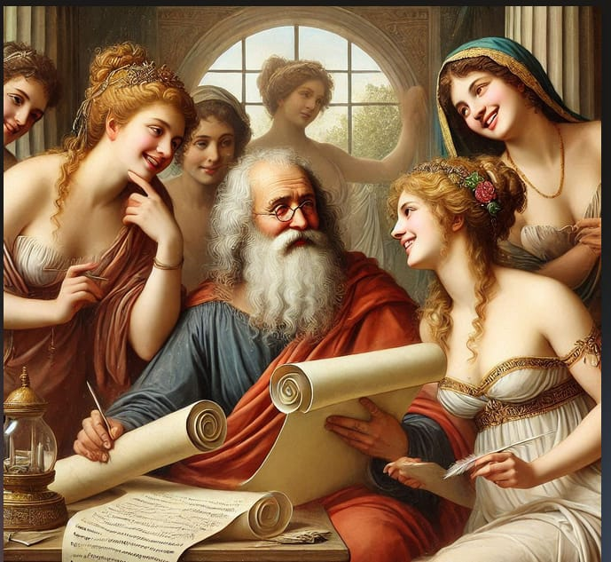

Impegnati, critici e disorganici: gli intellettuali necessari

Sarà che ormai tutti leggono, scrivono e cercano di imporre opinioni, ma la parola “intellettuale” è attualmente usata in modi piuttosto inopportuni. Sui giornali e nell’editoria imperversano personaggi come Scurati e Serra che, nel codificare la versione bellica del conformismo progressista, rappresentano i vertici dell’abiezione; da parte loro, social e dintorni hanno reso evidente la scalata compiuta dagli affabulatori di se stessi e dai pedagoghi dell’ovvio, che affollano pure istituzioni e premi un tempo prestigiosi. Tuttavia, esaltare il personale non lo riscatta dalla banalità ma nasconde l’apoteosi di un esistente inaccettabile, e rivendicare una professionalità da professorini non diffonde sapere ma favorisce la copertura di biechi interessi. Eppure, nemmeno si può fuggire, come sembra alludere Aldo Nove, dalle responsabilità della scrittura, soltanto perché il ruolo degli intellettuali è stato usurpato dai propagandisti più o meno espliciti del potere costituito. Quindi, che fare? Alessio Mannino ci ricorda che, per chi davvero vuole portare testimonianza e contribuire al cambiamento, il compito è piuttosto quello di essere critici, impegnati e disorganici. Quindi, mettere in discussione tutto. E non solo.
«Che nessuno parli mai più di ‘intellettuali’, gli schifosi amplificatori delle più allucinanti propagande, funzionali a se stessi perché schiavi del Potere che sostengono caricandolo a parole inique e violentissime. Che nessuno parli mai più di ‘intellettuali’». Così lo scrittore Aldo Nove martedì 11 marzo, sulla sua bacheca Facebook – ah, i social: causa e soluzione di tanti, anche se non tutti i problemi, giusto per citare Homer Simpson, che però parlava di birra. Nove si riferisce ad Antonio Scurati, novello esteta della guerra, lo Jünger da scrivania. Noi ci aggiungeremmo Michele Serra, mobilitatore di piazze europeiste per supportare il restyling di Repubblica (puramente grafico, visto che il prodotto addirittura peggiora: sempre più bellicista, sempre più conformista, sempre più fariseo). Ma ha ragione, Nove? No, non ha ragione.
Gli intellettuali possono avere ancora un ruolo fecondo, finché esisteranno nicchie di ostinati che daranno al pensiero un valore e non soltanto un prezzo. A patto di rispettare tre caratteristiche.
L’intellettuale deve essere impegnato. È la pre-condizione, necessaria anche se non sufficiente. Data per scontata la distinzione scolastica con i lavori manuali (via via sempre più ridotti dall’avanzare della tecnologia, e per altro destinati a ridursi ancora con la cosiddetta intelligenza artificiale), un intellettuale nel senso moderno del termine nasce più o meno a fine Ottocento, con il celebre “J’accuse” di Émila Zola sull’affare Dreyfus. Naturalmente c’erano già stati molti precedenti esempi di giornalisti, romanzieri, filosofi buttatisi nella mischia del pubblico agone, soprattutto in ambiente francese, con i pensatori illuministi settecenteschi (Diderot, Voltaire, Rousseau) e la legione di pamphlettisti prima, durante e dopo la Rivoluzione (Desmoulins, Constant, Madame de Staël ecc). Ma è con Zola che l’interventismo dell’uomo di lettere si fa evento e caso nazionale, allargandosi dai circoli degli addetti ai lavori o della frange più politicizzate all’uditorio di massa. Sorge la figura dell’“éngagé”, appunto: chi non si limita al mestiere di sfornare opere per gli amanti delle Muse, ma entra a gamba tesa nell’arroventato scontro d’idee sul presente. Questo aspetto non è mai venuto meno: di intellettuali coinvolti nella discussione contingente ce ne sono sempre stati, e ce ne sono ancor oggi. Anche Serra, che indìce una manifestazione pro-Europa, è fra questi. Certo, hanno un peso decisamente minore rispetto ai Sartre, ai Marcuse, ai Pasolini, agli Heidegger, perché l’elaborazione teorica di tipo umanistico è stata spodestata dalla rincorsa a giustificare il nient’affatto innocente sviluppo tecnico (si pensi solo all’accelerazionismo, Nick Land & C, perfettamente funzionale al nuovo ordine feudo-capitalistico, o per stare alle plaghe italiane a un Maurizio Ferraris, qualche anno fa autore di un’indimenticabile “provocazione” sulla vita online come “comunismo realizzato”, sic). Ma l’impegno, per quanto discutibile e avversabile, c’è tuttora.
L’intellettuale deve essere critico. Non basta impegnarsi, se poi l’eventuale slancio patriottico o di parte va a incensare, più o meno mascheratamente, il potere di turno. Sotto mentite spoglie, l’intellettuale di consenso esegue un lavoro per cui ci sono già altri che vengono profumatamente pagati. Fa cioè l’ufficio stampa, l’agit-prop, l’agente di comunicazione del partito, del padrone o della lobby che sia. Se non esercita il dissenso rispetto a chi dirige la giostra, senz’altro serve, sì: nel senso che si asservisce, fa il servo. La molla è umana molto umana: la sete di successo, di visibilità e, ovviamente, di denaro. Intendiamoci: tutte le personalità che si espongono sul proscenio, critiche o non critiche, sono mosse dalla vanità. Sono tutte un po’ narcise, le persone d’intelletto. Ma se nemmeno ci provano, ad assumere una pur minima posizione di contrasto rispetto ai discorsi dominanti, allora l’autoreferenzialità, da fisiologica diventa patologica. E a volte, questa tara è così forte da non includere neppure la cattiva fede. Mi spiego. A differenza, poniamo, di un Vittorio Feltri che da infilzitore di “cinghialoni” in pieno declino (Craxi) divenne dall’oggi al domani corifeo di “cavalieri” restauratori (Berlusconi), se prendiamo invece un’Oriana Fallaci abbiamo l’esempio di una mente inquieta, e di un fegato roso, che arrivò a tesi apertamente razziste seguendo solo il proprio impossibile, ma brutalmente sincero carattere. Nutriremmo più d’un dubbio, al contrario, riguardo giornalisti che hanno perlustrato tutto l’arco costituzionale delle fazioni, solitamente passando dalla sinistra o estrema sinistra alla destra o estrema destra (l’inverso è più raro). Facciamo un nome? Tommaso Cerno: da direttore all’Espresso a direttore del Tempo senza troppi passaggi intermedi, trovando forse oggi, finalmente, il suo habitat ideale.
L’intellettuale deve essere disorganico. Quand’anche svolgesse le sue ottime critiche in una scala di variabile autenticità, c’è il fatto che la mera critica non è più sufficiente. Certo, con questi chiari di luna è già tanta roba, come si dice. Ma in un’ottica di lungo periodo, l’opposizione in negativo sconta un limite pesante: è condizionata diciamo alla fonte dalla realtà che va di volta in volta a denunciare, demistificare, decostruire. Tradotto: se l’egemonia, sfaccettata e abile nel velare il proprio retroterra ideologico, ne combina una delle sue, ecco lo spirito contro-egemonico avventarsi sul caso specifico, fare il suo lavoro destrutturante, e morta lì. La pars destruens, tutto sommato, è abbastanza facile. E alla lunga può avere come effetto collaterale una certa frustrazione (che, fra parentesi, lo scrivente sente tutta). A rappresentare il salto qualitativo è la famosa pars costruens, ovvero il tentativo, sperimentale finché si vuole, di proporre alternative, anche fosse sul piano teorico. Ma per arrivare a questo stadio, l’intellettuale dev’essere in grado di sostenere il difficile dovere della disorganicità. Antonio Gramsci teorizzò l’intellettuale organico. A chi, o meglio, a cosa, organico? Al partito (comunista). Nella pratica, se ne erano già visti all’opera parecchi. Anzi, potremmo dire che la classe politica in generale era composta, in buona percentuale, da intelletti di qualità. Specialmente nei movimenti rivoluzionari, com’era ai suoi tempi il socialismo (o come fu anche il fascismo: Mussolini stesso era un giornalista, e un giornalista di razza). Ma essere organici implica un risvolto che mina alle basi il presupposto stesso dell’attività pensante: la libertà di pensiero. Arruolandosi stabilmente – organicamente, appunto – sotto le bandiere di una forza che sottostà a logiche di potere e di consenso, si finisce inesorabilmente per amputare la propria indipendenza di giudizio. L’intellettuale, così, smette di essere tale: vedi punto 2.
Ma disorganico significa andare oltre: vuol dire rivendicare il diritto di poter contestare la propria stessa parte, qualora la si giudichi in errore o non all’altezza della situazione. Vuol dire far stecca sul proprio coro. Non a buffo, ché allora si scadrebbe in infantile bastiancontrarismo, ma solo se a dettarlo è la coscienza di un’onestà che si chiama, non casualmente, intellettuale. È qui che emerge il vero coraggio: misurarsi con il rischio di virare davvero controcorrente, perché può andarci di mezzo il legame con l’area di riferimento. Magari rimettendoci in collaborazioni, protezioni, amicizie, raccomandazioni. Sono pochi, i valorosi di questa pasta. Potremmo fare vari nomi, chi più chi meno con le credenziali a posto. Il pericolo maggiore, per gli irregolari, è conoscere l’isolamento, finire ai margini, e anche marciarci un po’, in sdegnosi auto-confinamenti pur di preservare la purezza. Ma sono questi tipacci che sembrano, e in effetti a volte sono, inaffidabili, quelli che svelano in modo cristallino il criterio-chiave per soppesare la libertà spirituale: pagare uno scotto per restare coerenti con sé stessi. Reale, non col paracadute. È di intellettuali così, che la loro personale torre d’avorio l’hanno fatta saltare con la dinamite, non inquadrabili, irriguardosi, agli antipodi del piacionismo e del compromesso, è di questi che si deve sentire più bisogno. Proprio perché antipatici, ostici, rompicoglioni. Ma, se e quando di spessore, stimolanti, veraci, spiazzanti o, quanto meno, meno noiosi. Perché meno prevedibili. Quindi, non stupidi. In una parola: intelligenti.
Ma anche essere intelligenti non basta più, di fronte a una complessità letteralmente transumana sotto i nostri occhi. Si tratta, anche per i cani sciolti, di mettere da parte l’ego e rendere disponibili le proprie capacità per la formazione di una contro-élite. Non una semplice futura classe dirigente: proprio un tipo differente dal gregge, un nucleo il più possibile impermeabile alla forma mentis sedimentata nell’inconscio collettivo: quella docilità fatta di comodità, auto-indulgenza, rimozione del dolore e della fatica, piaceri sedentari, diseducazione al senso del sacrificio e del sacro. Un tipo anti-individualista, che tuttavia non ricada subito nell’effetto-gregge che si vuol combattere. Un’impresa ardua, che mette insieme gli opposti, sensibilità di gruppo e diritto-dovere di autocritica, e che esige l’impegno per l’incontro fisico, in presenza. Sistematico, non una tantum. Va costruito un tessuto di comunità parallelo a quello, sfilacciato e poco impegnativo, delle community online. Contro la deficienza artificiale, urge come l’aria una super-intelligenza naturale.
PS: tutto ciò detto e considerato, il vero Intellettuale Collettivo, nella società dei “consumatori consumati” (Carmelo Bene), è sua signora la Pubblicità. Con Spettacolo annesso, e Giullari connessi. A me, come maître à penser da bar – il Bar dove il Virtuale cede il passo al Reale – spaventa di più un semi-colto Giuseppe Cruciani di un coltissimo Michele Serra. Fanno danni tutti e due, ma il primo è più insidioso: perché non se la dà da intellettuale…